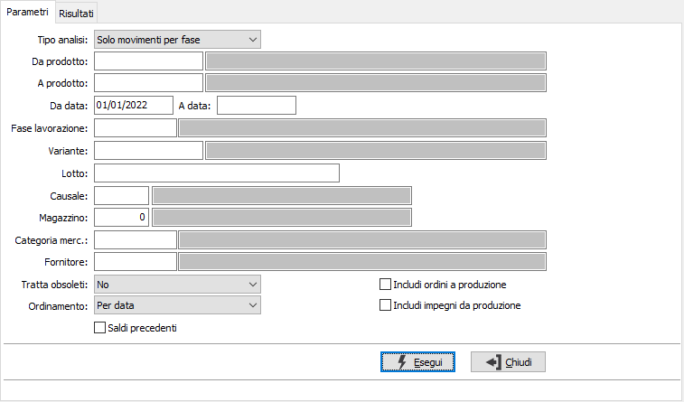
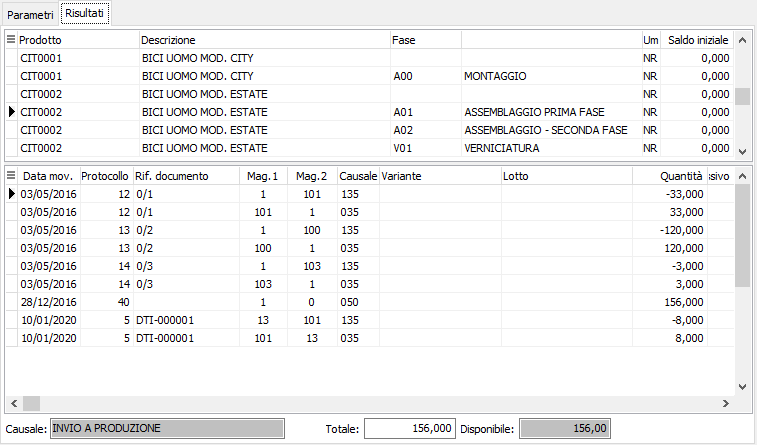
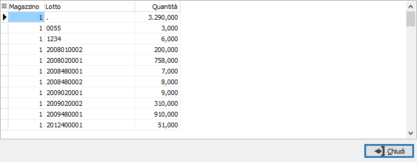

Analisi movimenti
Il programma effettua la visualizzazione dei movimenti di magazzino in base ai parametri inseriti dall’utente. Una volta visualizzati i movimenti, è possibile attivare la stampa della scheda o delle schede utilizzando il bottone Stampa della tool bar.
È possibile analizzare le giacenze del solo magazzino fasi oppure le giacenze complete dei dati del magazzino base.
È possibile visualizzare i movimenti relativi ad uno o più prodotti, o fasi, ad un fornitore, limitandone la selezione entro due date indicate dall’utente, ad una specifica causale, ad uno specifico magazzino. Se attive le relative gestioni è possibile specificare anche variante e/o lotto.
Il programma si articola su due finestre video. La prima, Parametri, consente la definizione dei parametri di analisi.

TIPO ANALISI: definisce la tipologia di analisi: analisi completa, magazzino fasi e magazzino base, oppure analisi del solo magazzino fasi.
DA PRODOTTO: eventuale codice dell'articolo, presente in anagrafica Prodotti, da cui si desidera iniziare la selezione dei movimenti di magazzino. Confermando a vuoto, la selezione inizia con il primo prodotto valido. Sul campo è attiva la ricerca (F9) sull’anagrafica prodotti.
A PRODOTTO: eventuale codice dell'articolo, presente in anagrafica Prodotti, a cui si desidera terminare la selezione dei movimenti di magazzino. Confermando a vuoto, la selezione termina con l’ultimo valido. Sul campo è attiva la ricerca (F9) sull’anagrafica prodotti.
DA DATA: eventuale data da cui deve iniziare l’analisi dei movimenti di magazzino per gli articoli precedentemente selezionati. Confermando a vuoto, l’analisi inizia con il primo movimento valido.
A DATA: eventuale data con cui si desidera terminare l’analisi dei movimenti di magazzino per gli articoli precedentemente selezionati. Confermando a vuoto, l’analisi si conclude con l'ultimo movimento valido.
FASE LAVORAZIONE: eventuale codice della fase di lavorazione, per cui si desidera effettuare la selezione di analisi. Confermando a vuoto, la selezione considera tutte le fasi di lavorazione. Sul campo sono attive le funzioni di ricerca (F9).
VARIANTE: presente se previsto dalla configurazione, eventuale codice della variante, per cui si desidera effettuare la selezione di analisi. Confermando a vuoto, la selezione considera tutte le varianti. Sul campo sono attive le funzioni di ricerca (F9).
LOTTO: presente se previsto dalla configurazione, eventuale codice del lotto, per cui si desidera effettuare la selezione di analisi. Confermando a vuoto, la selezione considera tutti i lotti. Sul campo sono attive le funzioni di ricerca (F9).
CAUSALE: eventuale codice della causale di magazzino a cui si vuole restringere la selezione di analisi. Sul campo è attiva la ricerca (F9) sulla tabella Causali di magazzino.
MAGAZZINO: eventuale codice del magazzino a cui si vuole restringere la selezione di analisi. Sul campo è attiva la ricerca (F9) sulla tabella Magazzini.
CATEGORIA MERCEOLOGICA: eventuale codice della categoria merceologica a cui si vuole restringere la selezione di analisi. Sul campo è attiva la ricerca (F9) sulla tabella Categorie merceologiche.
FORNITORE: eventuale codice del fornitore a cui si vuole restringere la selezione di analisi. Sul campo è attiva la ricerca (F9) sull’anagrafica fornitori.
TRATTA OBSOLETI: definisce come se includere nell'analisi anche gli articoli obsoleti: Si, No, Solo obsoleti.
ORDINAMENTO PER: combo box per definire i criteri di ordinamento. Valori ammessi: Per data; Per Magazzino/data; per Causale/data.
SALDI PRECEDENTI: check box significativo se la data di inizio selezione non corrisponde alla data di inizio esercizio. In questo caso, la presenza della spunta determina la visualizzazione dei totali carico / scarico dall’inizio esercizio al giorno precedente l’inizio dell’analisi.
INCLUDI ORDINI A PRODUZIONE: check box per includere nell'analisi anche gli ordini relativi alla produzione (casella con segno di spunta).
INCLUDI IMPEGNI DA PRODUZIONE: check box per includere nell'analisi anche gli impegni derivanti dalla produzione (casella con segno di spunta).
Confermando tramite pressione del bottone Esegui, viene avviata la selezione e richiamata la finestra video Risultati.

La finestra video è articolata su due sezioni: la sezione superiore elenca l’articolo o gli articoli selezionati, indicando per ciascuno di essi il codice, la descrizione, l’unità di misura e l’eventuale saldo iniziale (se richiesto).
La sezione inferiore elenca invece i movimenti relativi all’articolo selezionato, che è quello contrassegnato dal segno freccia a destra del rigo nella sezione superiore; i movimenti relativi ad ordini ed impegni vengono presentati in colore diverso, rosso per gli impegni e verde per gli ordinati; se l'analisi è completa le righe provenienti dal magazzino fiscale compaiono in blu.
Se l'articolo prevede la gestione dei dettagli (varianti/lotti) l'indicatore del mouse cambia in base alla presenza di dettagli e facendo doppio clic viene mostrata la finestra dei dettagli.

Cliccando invece sui bottoni anteprima di stampa o stampa della tool bar, si avviano le relative funzioni.